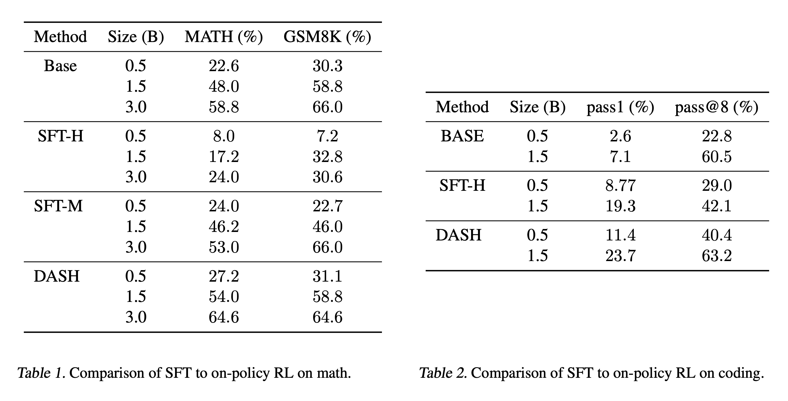
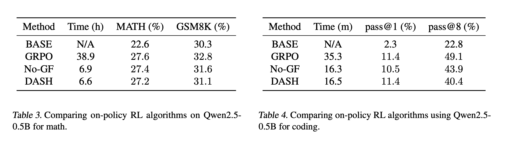
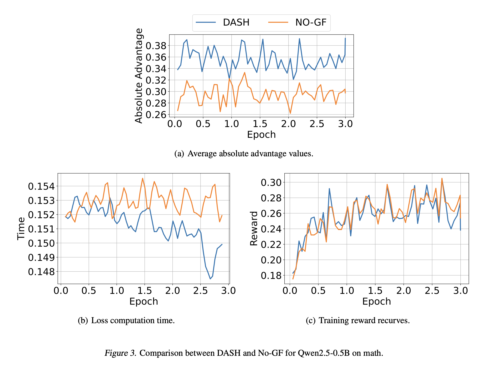
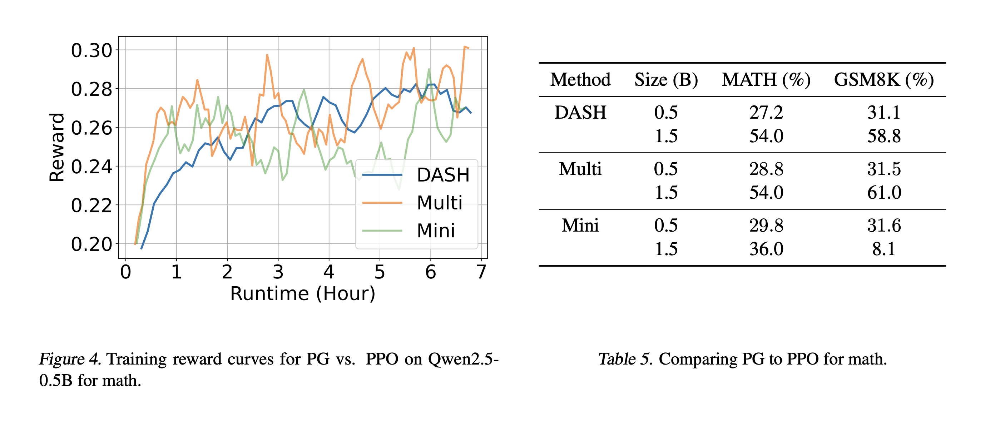
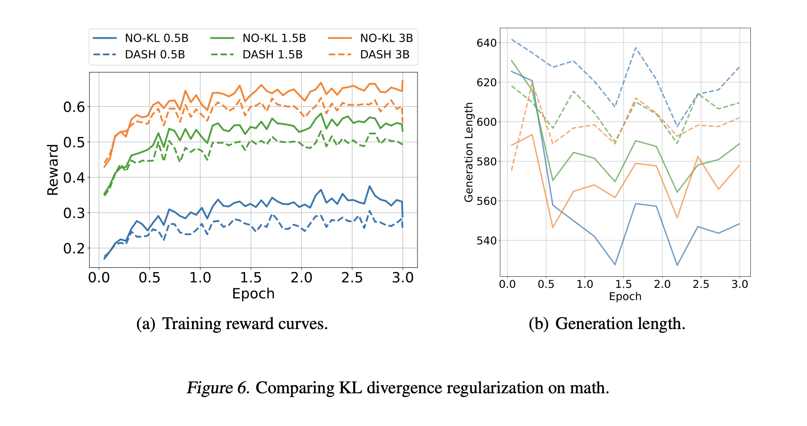
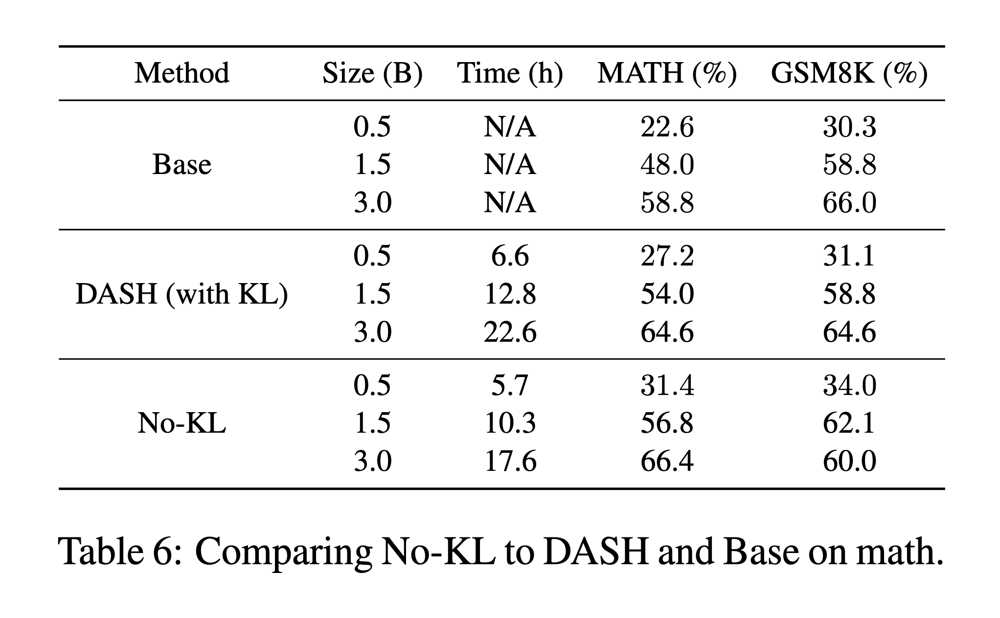
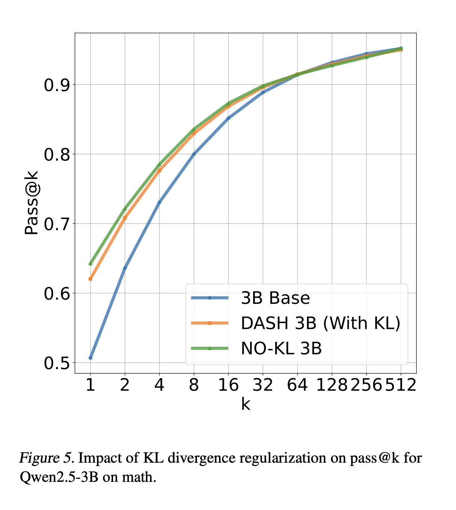

Post-training LMs with RL often demand massive compute and time. Since inference is far more memory-efficient than backpropagation, much larger batches are optimal for sampling. Empirically, sampling dominates total training time (right figure). We introduce the Distributed Aggregated Sampling Handler (DASH) (left figure) that dramatically reduces sampling time and accelerates training. DASH combines preemptive sampling (sampling of large batches with backpropagation in smaller chunks) and gradient filtering (discarding samples with low advantage estimates). It plugs into any sampling-based RL algorithm (on-policy or off-policy) and, versus GRPO, cuts training time by 83% without loss of accuracy (right figure).
Additionally, given that most RL methods were originally built for robotics rather than LM reasoning, we analyze design decisions for LM-focused RL to balance accuracy and efficiency on smaller models. We use Qwen2.5-{0.5B, 1.5B, 3B} models as our base models, all of which are not already post-trained.
We use the MATH-500 dataset for training and in-distribution evaluation, and the GSM8K dataset for out-of-distribution evaluation. For coding we use the MBPP+ dataset.
SFT vs. On-Policy RL
For the models we consider, we find on-policy RL to be effective but not SFT
We compare three algorithms: (i) SFT with human-written reasoning traces, denoted SFT-H, (ii) SFT with reasoning traces from Qwen2.5-7B-Instruct, denoted SFT-M, and (iii) DASH. Results are shown in the table below. As can be seen, DASH improves performance both in-distribution and out-of-distribution, demonstrating that on-policy algorithms can efficiently learn mathematical reasoning skills that generalize across datasets. On the other hand, neither SFT-H nor SFT-M improve performance, with SFT-H significantly degrading both in-distribution and out-of-distribution performance. Intuitively, the substantial performance degradation caused by SFT-H can be attributed to the fact that human reasoning often omits many intermediate steps, which is especially problematic for smaller LMs.
For coding, we train on human programs in MBPP+. As shown in the table below, DASH outperforms SFT
in most cases, demonstrating the the general effectiveness of on-policy RL at improving the reasoning capabilities of LMs.
To the best of our knowledge, these are among the first results to show that on-policy RL can improve code generation for
smaller LMs.

DASH vs. GRPO
Preemptive and Parallel Sampling
We sample a large number of trajectories in one batch, and then perform backpropagation on these samples in smaller batches. Preemptive sampling can be further sped up by using multiple inference servers in parallel. We note that parallel sampling provides the amortized speed-up only when sampling is done in large batches. This is due to internal speed-up mechanisms for single sampling servers when the batch size is small. We also note that to avoid out-of-memory issues on the backpropagation servers, large batches of samples are cached and delivered upon request.
Illustration of preemptive sampling. We use $H$ GPUs for inference and $H'$ for backpropagation; they are shown in blue and green, respectively. Given a batch of $M$ prompts $\{x_1, \ldots, x_M\}$. The inference GPUs then generate corresponding responses $\{\hat{y}_1, \ldots, \hat{y}_M\}$, which are aggregated across GPUs into CPU memory. When a backpropagation GPU requests generations for a prompt $x_m$, the corresponding cached response $y_m$ is retrieved and delivered. Since we are using groups for advantage estimation, each prompt $x_m$ is duplicated to form groups, and all generations in the same group are sent to the backpropagation GPU upon request.
Gradient Filtering
We drop examples with small advantage estimates. If the advantage estimate is small, then the contribution to the gradient is likely to be small (unless the policy gradient happens to be very large, which we find to be unlikely in practice). Intuitively, these are examples where the model either almost always gets the answer right (in which case there is nothing new to learn) or almost always gets it wrong (in which case the problem is currently too difficult to learn).
Experimental Results
We compare DASH to GRPO both in terms of accuracy and running time by training Qwen2.5-0.5B using both GRPO and DASH. We also use an ablation of DASH without gradient filtering, denoted No-GF. Results are shown in the tables below. As can be seen, DASH significantly reduces GRPO training time (from 38.9 hours to 6.6 hours) without any significant reduction in performance, highlighting the effectiveness of preemptive sampling and gradient filtering.

Compared to No-GF, DASH reduces running time by 4% without any significant reduction in performance. The effectiveness of gradient filtering can be improved to 10%; see the appendix of our paper. The impact of GF on training dynamics is illustrated in Figure 3. Specifically, as shown in Figure 3(a), gradient filtering
increases the average absolute advantage values, leading to more significant gradient updates; consequently, as shown in
Figure 3(b), forward and backward pass running times are reduced. Finally, since only samples inducing trivial gradient
updates are filtered out, the training curves remain similar before and after applying gradient filtering, as shown in Figure 3(c).

Policy Gradient vs. PPO Gradient Updates
PPO has significantly higher variance compared to Policy Gradient, which is
the opposite of conventional wisdom
Note that since DASH takes one gradient step only for each new sample, it coincides with the Policy Gradient algorithm. On the other hand, PPO allows multiple gradient descents on each sample (for detailed comparison, check section 3.2 of our paper). We thus consider two implementations of PPO.
First, we can take K gradient steps using all M
samples, which we call PPO-Multi (or just Multi).
Second, we can divide the M examples into K
mini-batches of size M/K each, and take one gradient step on each mini-batch, which we call PPO-Mini (or just Mini).
We compare DASH to Multi and Mini. DASH uses a batch size of M = 256 (with K = 1), Multi uses M = 256
and K = 3, and Mini uses M = 8 so K = 32. Multi and Mini are slower than DASH; for fair comparison, we truncate
their training times to match the wall-clock time of DASH. The results are shown in Table 5, and training curves are shown
in Figure 4. As can be seen, Multi and Mini achieve faster initial performance improvements and have slightly higher
accuracies; however, they have significantly more unstable training curves. Similar results for the 1.5B model are in the appendix of our paper.

KL Divergence Regularization
Removing KL divergence regularization can lead to more concise generations
and higher accuracies
We compare DASH to an ablation without the KL divergence term, denoted No-KL. Training reward curves are shown
in Figure 6(a). As can be seen, removing KL divergence regularization generally leads to higher rewards during training;
most likely, No-KL can focus on reward optimization without being constrained to stay close to the initial model. As shown
in Table 6, No-KL achieves greater in- and out-of-distribution than DASH (except in the case of the out-of-distribution
accuracy of the 3B model).
Furthermore, as shown in Figure 6(b), we find that for No-KL, the average generation length is shorter, thereby reducing
overall training time; this difference is also reflected in Table 6. We hypothesize that to compensate for KL divergence
regularization, models must generate longer reasoning traces.


RL concentrates probability mass and reduces generation diversity
Finally, for the 3B model, we study how KL divergence regularization affects pass@k. Results are in Figure 5: No-KL performs best for small k, although the gap closes for
larger k. Intuitively, RL concentrates probability mass and reduces generation diversity (Shypula et al., 2025; West & Potts, 2025).

Conclusion
We have performed a careful empirical analysis of several key design decisions in RL algorithms for improving language model reasoning, with a focus on computationally constrained scenarios; these include SFT vs. on-policy RL, policy gradient vs. PPO, and whether KL divergence regularization is used. Furthermore, we identify the sampling strategy as the primary computational bottleneck in on-policy RL; to address these issues, we propose DASH, a novel algorithm using preemptive sampling and gradient filtering to improve efficiency. We demonstrate that DASH can reduce RL training time by 83\% while maintaining performance. More broadly, we believe that systematizing the study of RL for language model reasoning is key to designing more effective RL algorithms in this domain, which differs significantly from robotics domains targeted by existing RL algorithms such as PPO. Our study is a first step in this direction.
BibTeX
@misc{huang2025effectivereinforcementlearningreasoning,
title={Effective Reinforcement Learning for Reasoning in Language Models},
author={Lianghuan Huang and Shuo Li and Sagnik Anupam and Insup Lee and Osbert Bastani},
year={2025},
eprint={2505.17218},
archivePrefix={arXiv},
primaryClass={cs.AI},
url={https://arxiv.org/abs/2505.17218},
}